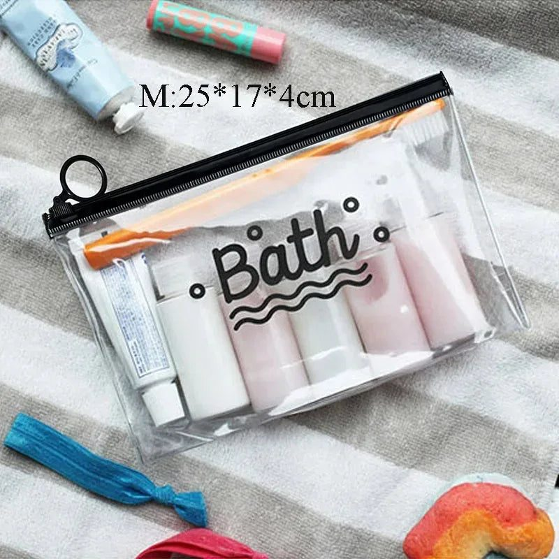
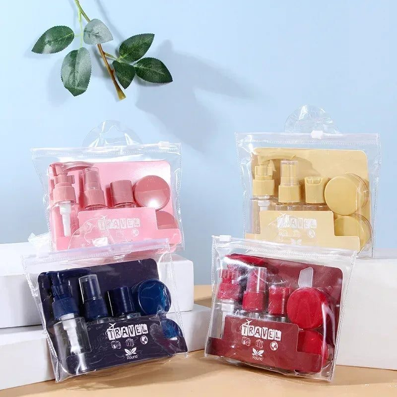

- Documents first
- Ihram and clothing
- Toiletries in travel bottles
- Organisers for small hotel rooms
- Health and comfort items
- For worship
- Bringing gifts home
- Packing tips for families
- Staying healthy in the heat
- Phones, power and connectivity
- Money matters
- Prepare your bags
Every year, a very large number of Pakistanis travel for Umrah, often in family groups that include elderly parents and young children. It is a spiritual journey, but it is also a physically demanding trip, with long walks, crowds, heat and tight hotel rooms. Packing well lets you focus on worship instead of searching for things. This guide covers the practical travel essentials, especially for first-time pilgrims.
Documents first
Keep a dedicated pouch for passports, visas, tickets, hotel bookings, CNICs, vaccination certificates if required, and some Saudi riyals. Make photocopies and save photos of every document on your phone and in email. Carry the travel agent's contact details and the group leader's number. Elderly travellers should have a card with their name, hotel and a family member's phone number in their pocket at all times.
Ihram and clothing
Men need at least two sets of ihram, plus a belt with pockets for money and phone. Women should pack comfortable abayas, scarves and loose, breathable clothes. Choose light cotton for the heat, and carry a light shawl for air-conditioned masjids, which can be cold. Comfortable, broken-in footwear is essential; you will walk many kilometres during tawaf and sa'i. Pack a cloth bag to carry shoes inside the Haram.

Toiletries in travel bottles
While in ihram, scented products are not allowed, so pack unscented soap, shampoo and lotion for that period. Full-size bottles add weight and can leak in luggage. Instead, use refillable travel bottles:
- Rotating multi-compartment bottle sets keep shampoo, conditioner, soap and lotion in one compact unit
- Small cream pots hold moisturiser, Vaseline or hair oil
- Leak-proof bottles prevent spills on clothes
- A transparent toiletry bag makes airport security checks quicker
Check airline rules for liquids in hand luggage.
Organisers for small hotel rooms
Hotel rooms near the Haram are often shared by four or more people. Packing organisers and cubes keep each person's clothes separate and make it easy to find things without unpacking the whole suitcase. A hanging toiletry bag saves space in small bathrooms. Label bags for each family member.
Health and comfort items
- Personal medicines with prescriptions, plus extra for delays
- Painkillers, ORS sachets, plasters for blisters, and antiseptic cream
- A small spray bottle to mist your face in the heat
- Unscented sunscreen and lip balm
- A compact umbrella for shade
- A refillable water bottle for Zamzam

Elderly pilgrims may need a folding stool or wheelchair arrangements; check with your agent beforehand.
For worship
Pack a small pocket Quran or use an app, a dua booklet for Umrah, tasbeeh, and a lightweight prayer mat for the hotel. Many pilgrims carry a small notebook to write duas that family and friends requested.
Bringing gifts home
Leave space in your luggage for Zamzam water, dates, prayer mats and gifts. Airlines have specific rules for carrying Zamzam, so check with your carrier. Expandable bags and an extra foldable travel bag are useful for the return journey.
Packing tips for families
Pack children's clothes in separate labelled bags. Keep a change of clothes for everyone in hand luggage in case checked bags are delayed. Assign one adult to carry documents and another to carry medicines. Weigh suitcases before leaving home.
Staying healthy in the heat
Drink plenty of water, rest between rituals, avoid walking in the midday sun where possible, and watch elderly family members for signs of exhaustion. Shoes and socks that fit well prevent painful blisters.
Phones, power and connectivity
Your phone will be your map, camera, Quran app and link to family back in Pakistan. Carry a power bank and a short charging cable in your pouch, plus a universal adapter for hotel sockets. Buy a local SIM or activate roaming before leaving. Share live location with family members in your group so nobody is lost in the crowds after prayers, and agree on a fixed meeting point near a numbered gate of the Haram.
Money matters
Carry a mix of cash and a debit card that works abroad. Inform your bank before travelling so the card is not blocked. Keep small notes for food, transport and shopping.
Prepare your bags
Travel bottle sets, cosmetic bags, cream pots and organisers can be found among the travel essentials from Trenducts, and you can explore everything else on Trenducts, with delivery across Pakistan. May your Umrah be accepted.